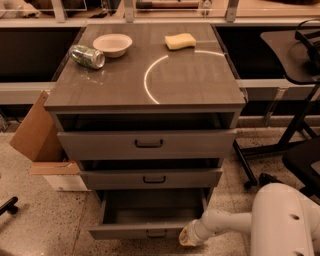
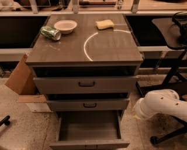
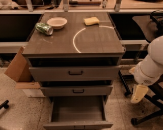
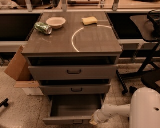

Released demonstration example 0 for each dataset. Displayed predictions come from the published checkpoints; ground truth is shown for comparison and is not an input to generation. Playback is 4 fps for viewing. Data & provenance ↗
02 / METHOD
How RoboImagine learns from imagined futures.
Two stages connect autoregressive video prediction with comparative post-training: first learn to predict, then learn which candidate futures better preserve task progress and visual detail.
Two observed frames establish the scene and dynamics anchor. A frozen visual codec quantizes states; discretized actions and frozen T5 instruction features condition a causal Transformer. Supervised fine-tuning trains the backbone and text cross-attention to predict future dynamics tokens.
Grouped diverse beam search (GDBS) uses four groups with two beams each. A soft cross-group token-overlap penalty balances likelihood and diversity. One complete future is retained per group, giving four candidates under identical observations, actions, and instructions.
A frozen 4B mJev evaluator (Jev in the text) compares task progress using the instruction, initial observation, and eight frames per video. Both candidate orders mitigate position bias. MAE and VGG-LPIPS measure visual error against recorded futures. The two signals are standardized within the candidate set before fusion.
Candidate-relative advantages reweight token probabilities, regularized toward the frozen SFT policy. Policy evaluation replays each branch’s actual generation history. One optimizer step is taken per candidate batch; at the generating snapshot, clipping is inactive and the reward gradient is advantage-weighted likelihood.
Each branch preserves the initial context and observed dynamics anchor, plus its latest six predicted states with paired actions. A new frame is appended to the output before the history rolls forward. Six frames limit the input history, not the generated video length.
POST-TRAINING → INFERENCE
Feedback teaches the model.
Recorded future frames enter only the visual-feedback branch during post-training. At evaluation, frame-wise ordinary beam search (width four) produces a single rollout using the learned model—without the evaluator or ground-truth futures.
03 / CONTROLLED RESULTS
Beyond more supervised training.
Same SFT initialization. Same update count. Same evaluation trajectories and decoder.
+1.26dB
PSNR over continued SFT
−11.93%
LPIPS relative to continued SFT
500
Post-training updates
How the predictions improve
Continued SFTMCTSOrdinary beamRoboImagine (GDBS)
RT-1: 128 trajectories, 32 predicted frames. Points are evaluated checkpoints; straight segments connect them. Search methods construct training candidates; evaluation uses the same width-4 decoder. Equal updates do not imply equal compute. Figure 8 sources ↗
View the metric values
A closer look: closing the drawer
Same trajectory · same prediction frame (+32) · 500 additional updates

Ground truth

SFT initialization

Continued SFT

RoboImagine
Qualitative example from Figure 8, shown separately from aggregate evaluation. Images are archived predictions, not newly generated illustrations.
Each experiment retains its documented cohort. Figure 13 uses the separate historical 11-trajectory study; Table 5 and Figure 14 use the matched-30 protocol. BridgeV2’s main-table result is labeled as a 32-trajectory validation result.
05 / GET STARTED
From checkpoints to predicted pixels.
Load a released model, generate an actual video, and inspect its predictions, token sequence, and memory trace.